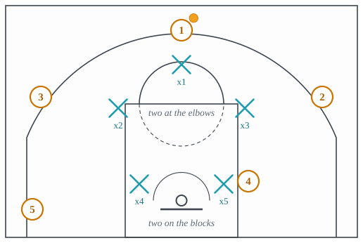
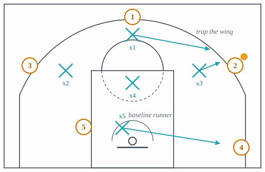
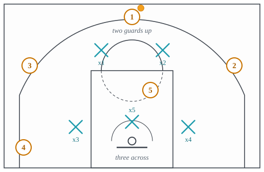
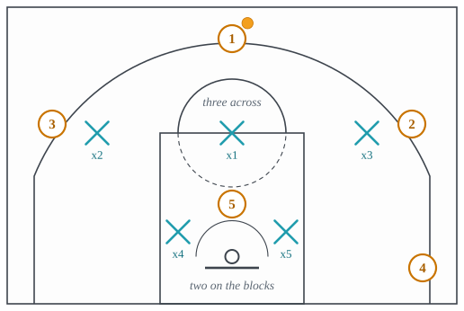
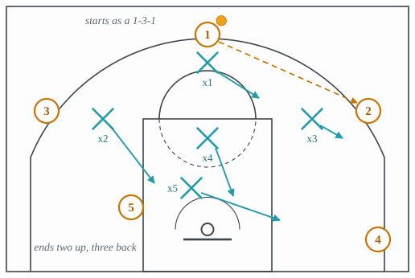
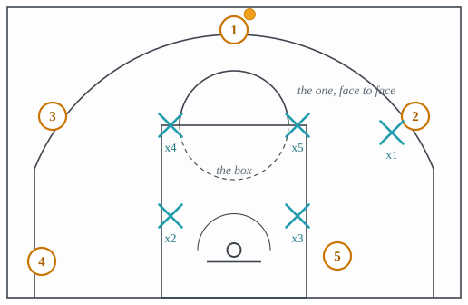
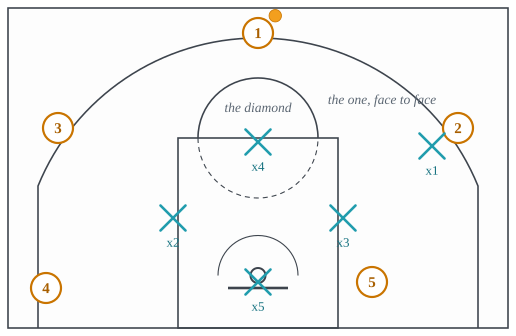
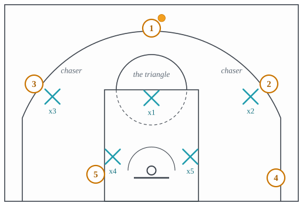

Zones and junk defenses
Guarding areas instead of players, and hybrids built to erase one scorer.
All families · 11 terms · 10 full, 0 partial, 1 short
1-2-2 zone
One defender at the top, two at the elbows, two on the blocks; it covers the arc better than a 2-3 and the baseline worse.

Why it is run. One at the top and two at the elbows covers the arc better than a 2-3, and two on the blocks covers the baseline better than a 3-2, at the cost of doing neither as well as the shape built for it.
What beats it. The quick wing-to-corner pass before the elbow defender steps out; the same high-post and short-corner attacks that beat the 2-3.
1-3-1 zone
One at the top, three across the free-throw line, one on the baseline; built to trap and force long passes.

Why it is run. A long thin shape with a point and a baseline runner exists to trap the wing catch with two defenders and force the long pass out of it; it is a gamble on turnovers, not a scheme of protection.
What beats it. The skip pass out of the trap to the far corner, which the single runner cannot reach; a handler who keeps his dribble and splits the trap.
2-3 zone
Two defenders up top and three across the baseline, packing the paint.

Why it is run. Two up and three across the back closes the paint completely and keeps the rim protector at the rim; it is thin at the high post, where the two lines meet, and in the corners the back line has to stretch to.
What beats it. The high-post entry and the pass from there to the corner; the skip pass when the whole zone has shifted; offensive rebounds against a back line with nobody to box out.
3-2 zone
Three across the free-throw line extended and two on the blocks, pressuring shooters at the cost of the glass.

Why it is run. Three across the free-throw line extended crowds the arc against a shooting team and guards the high post; two players are left with the whole baseline and the glass.
What beats it. The short-corner catch behind the low pair; the drive into the gap between a top defender and a low one; the offensive rebound.
Amoeba defense
Also: amoeba
A zone that changes shape during a possession, starting from something like a 1-3-1, so the offense cannot be sure which zone it faces after each pass. One glossary calls it a junk defense and another a zone.

Why it is run. A zone offense works by recognizing the zone and attacking its seams; a defense that changes shape moves the seams after the offense has found them, and the confusion is the point, because it is built to force turnovers rather than to protect the rim.
What beats it. Patience and ball reversal, since a shape that changes on every pass eventually leaves a defender out of place; and a catch at the high post, which every shape has to answer.
Box-and-one
Four defenders in a box zone with one chasing the opponent’s best player man-to-man.

Why it is run. Against a team with one scorer and little around him, one defender in the scorer’s chest all game and a four-man box behind him bets that the other four attackers cannot beat a zone.
What beats it. The other four attackers scoring; the chased scorer setting screens, which the box has no rule for; a big posting against a zone that has no one to double.
Diamond-and-one
The box-and-one with the four zone defenders in a diamond, one at the top, one on each side of the lane and one under the rim, while the fifth chases the scorer.

Why it is run. Turning the box forty-five degrees puts a zone defender at the free-throw line and one in front of the rim, so the top of the key and the rim are guarded better than the box guards them, and the blocks and short corners worse.
What beats it. The unchased attackers scoring from the blocks and short corners the diamond leaves thin; the chased scorer setting screens, which the zone has no rule for.
Junk defense
Also: combination defense
Any zone-and-man hybrid built to take one player out of a game.
Match-up zone
A zone whose defenders take the player in their area man-to-man while he is there.
![A 2-3 zone with the ball at the top. x1 and x2 stand high on either side of the free-throw circle, x3 and x4 are the two back corners of the zone, and x5 is in front of the rim. The attacker 4 cuts from the left wing down through the lane toward the right corner, passing below 5 at the high post. The left-back defender, x3, follows him into the lane, his arrow running under the cut, labeled follow him through. Past the lane the right-back defender, x4, drops to pick him up, labeled then he is yours. 2 is on the right wing and 3 in the left corner. The offense sees man-to-man on every cutter and a zone on every pass.](../figures/match-up-zone.svg)
Why it is run. A zone shape with man principles inside it shows the offense a defender on every catch and a zone on every pass, so neither its zone offense nor its man offense finds what it was built for.
What beats it. Cutters through the seams faster than the hand-off can be made; the overload that puts two attackers in one area.
Triangle-and-two
Two defenders chase the opponent’s two best players man-to-man while the other three form a triangle zone, one at the free-throw line and two on the blocks.

Why it is run. Two chasers on the two scorers and a three-man triangle behind them concedes the arc to the other three attackers entirely, which is only a bet worth making when the defense is sure they cannot make it.
What beats it. The three unchased attackers shooting; the two scorers screening for each other and dragging the chasers into the triangle.
Zone defense
Each defender guards an area rather than a player.
Why it is run. Guarding areas instead of men puts more bodies in the paint than man-to-man can, removes the ball screen as a problem, and hides a slow big in the middle; the arc, the skip pass and the glass are the price.
What beats it. Zone offense: the high-post catch where two areas meet, the short corner behind the back line, the overload, and the skip pass to the side the zone has just left.